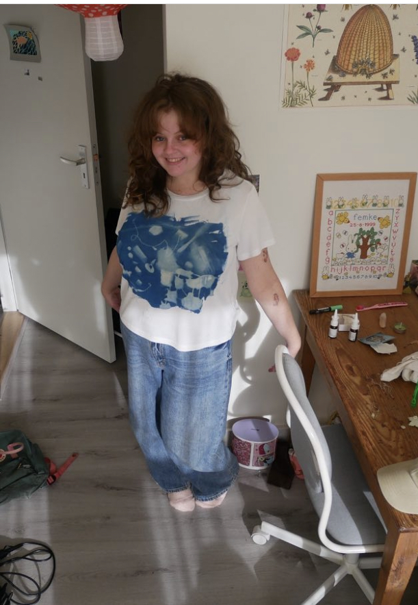
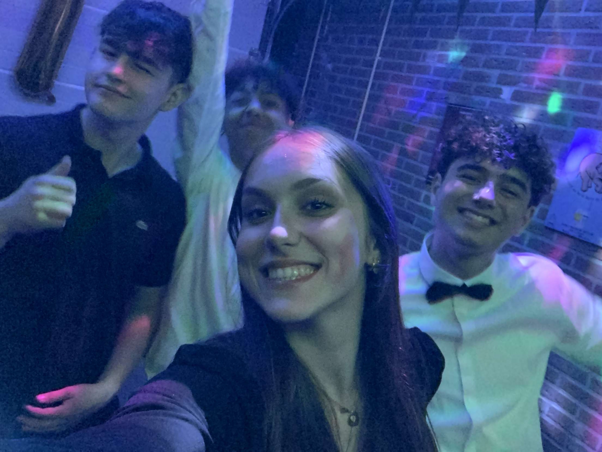
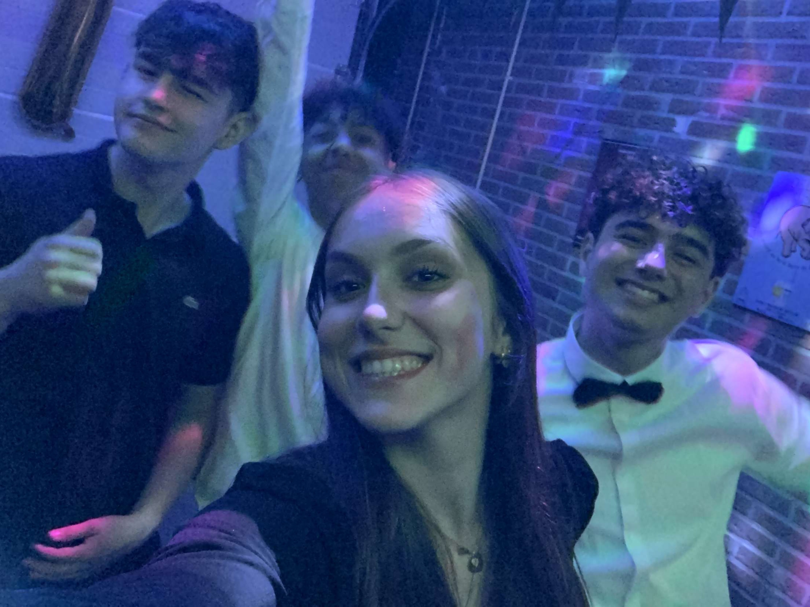

Wij als mandems hebben veel meegemaakt maar ik ga nooit vergeten toen we op deze dames gingen double teamen
sindsdien noemde iedereen inclusief papa oele je
oja dit heb ik je niet verteld maar ik heb het destijds opgenomen hier is een kleine preview:
geweldig he zoveel herrineringen die opkomen tijdens dit audio filetje
sinds dien ging het heel snel met je.
je ging van de ene na de andere. Ik zal het even catogoriseren op leeftijd om het overzicht te bewaren.
18+
anna
Anna is een elegante dame uit Renesse met weelderige, zwarte lokken die golven tot halverwege haar rug. Haar donkerbruine ogen stralen met een warmte en intelligentie die meteen opvallen wanneer je met haar praat. Ze heeft een zachte glimlach en een vriendelijke uitstraling die mensen op hun gemak stelt. Anna heeft een passie voor kunst en literatuur en haar boekenplanken zijn gevuld met werken van auteurs over de hele wereld. Maar ze is ook avontuurlijk en houdt van reizen, vooral naar exotische bestemmingen waar ze nieuwe culturen kan ontdekken en onvergetelijke ervaringen kan opdoen. Ondanks haar verfijnde smaak en stijlvolle uitstraling, is Anna nederig en down-to-earth, en heeft ze altijd een open geest en een hart vol compassie voor anderen
Anisha
Anisha is een jonge vrouw met zwart haar en warme, donkerbruine ogen die haar gezicht een vriendelijke en uitnodigende uitstraling geven. Haar haar is glad en glanzend, met een natuurlijke krul aan de uiteinden. Ze heeft een jeugdige uitstraling, en haar zachte, gladde huid en subtiele glimlach geven haar een luchtige en ontspannen uitstraling. Ze heeft een slank en atletisch figuur, met lange benen en een gezonde gloed op haar gezicht. Anisha houdt van het buitenleven en is vaak te vinden in de natuur, waar ze geniet van wandelen en kamperen in de wildernis. Haar persoonlijkheid is net zo warm en vriendelijk als haar uiterlijk, en ze is altijd bereid om anderen te helpen en een luisterend oor te bieden.
Frederique
Het is algemeen bekend dat Frederique zwart haar heeft en dat ze er op zichzelf wel aantrekkelijk uitziet. Maar eerlijk gezegd begrijp ik niet waarom sommige mensen zo'n ophef maken over haar. Ja, ze heeft een opvallende filter op haar foto's waardoor ze er misschien iets beter uitziet dan in werkelijkheid, maar dat doen veel mensen tegenwoordig. Het is niet alsof ze een supermodel is of zo.
Het grappige is dat papa Oele haar heel graag wou hebben voor zijn bedrijf, maar dat Robin van Opdorp hem net voor was en haar al had ingelijfd. Ik weet niet wat er zo speciaal aan haar is, behalve dan misschien dat ze goed is in het manipuleren van mensen. Maar goed, ik ben gewoon niet onder de indruk van haar, en ik denk dat veel anderen dat ook niet zijn.
16+
lieke
!Wees bewust van dat iedereen wel eens een foutje maakt en dat het belangrijk is om niet te hard te zijn voor jezelf of anderen! Robin van Opdorp, weet dat maar al te goed. Ook al zijn ze allebei verantwoordelijke jongeren, ze begrijpen dat een klein slippertje kan gebeuren en dat het niets is om je voor te schamen. Dit gezegd te hebben is Lieke een spontane, enthousiaste tiener van destijds 16 jaar oud. Ze heeft een levendige persoonlijkheid en een hart van goud. Lieke is een creatief persoon die graag schildert en tekent in haar vrije tijd. Ze is ook een goede student die hard werkt om haar doelen te bereiken.
marjolein
Jij en ik robin weten allebei dat zij wel echt een stukje in de dangerzone kwam maar goed je krijgt deze pass nog van me maar je moet echt gaan oppassen.Marjolein heeft prachtig blond haar dat glinstert in de zon. Hoewel ze niet helemaal mijn type is, kan ik niet ontkennen dat ze een aantrekkelijke verschijning is.
Oke kijk ik dacht je ging allemaal goed en aardig maar waar ik wel erg van schrok destijds, is dat je vanaf de camping naar een huisje ging verderop. Ik dacht er toen niks van maar omdat het je verjaardag is en ik wou dit cadeau voor je maken dacht ik: weetje hoe moeilijk is het nou om even hallo te zeggen tegen deze mogelijke contender. maar toen ik de deur opende en vroeg aan de ouders of madam thuis was kreeg ik wel iets heel aparts te horen. Madam was blijkbaar waar ik naar vroeg was niet mijn leeftijd. dus ik verontwaardigt hoe oud dan? De ouders zeiden 15. Ik met een beduiste blik keek ze aan en ik dacht dat ze een grapje maakte. ik ging naar binnen met en kreeg een bakje thee van de spanning die ik ontving van dit bericht. Er spookte in mijn hoofd rond dat ze destijds rond de 13 a 14 moest zijn.Ik zat na te denken om dit er wel bij te doen. Maar achja we gaan je lijst af van renesse dus ik dacht ik doe haar er ook bij.
14+

Sorry robin ik ga hier geen beschrijving aan geven dit voelt ethisch niet goed. Alhoewel weetje we doen het gewoon.Andrea is een meisje van 14 jaar oud met donker, warrig haar dat alle kanten op lijkt te springen. Haar uitstraling is wild en vrij, alsof ze altijd klaarstaat voor avontuur. Ze heeft een eigenzinnige stijl en draagt vaak opvallende kledingstukken die haar persoonlijkheid weerspiegelen. Hoewel ze nog jong is, heeft ze al een volwassen uitstraling en kan ze soms zelfs intimiderend overkomen. Desondanks is ze een interessante toevoeging aan de 14+ lijst.
Nee maar even alle gekkigheid op een stokkie
Ik ben niet echt goed in zulke dingen schrijven maar ik ga het proberen.
Ik zou met niemand anders de dingen willen meemaken die wij nu ervaren. We kunnen van het ene lastige gesprek naar het luchtigste onderwerp gaan. We genieten van de mooie momenten en staan klaar voor elkaar als het minder gaat. Dat is de vriendschap die ik wil en dat is de vriendschap die ik heb. Je bent me mattie en zal me mattie blijven. Ik hoop dat we nog veel dingen mogen meemaken samen.

.JPG) 
